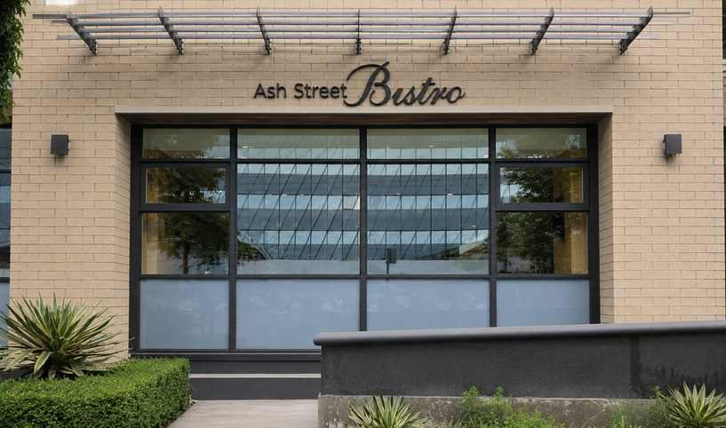

1
Main floor exterior signage · Option 1
Pin-mounted letters to brick.
Individual stainless-steel letters in black anodized, brushed-stroke finish are pin mounted directly to the brick wall at the main-floor façade.
- Material: stainless steel letters
- Finish: black anodized with brushed stroke
- Mounting: pin mount to brick wall
- Effect: direct, refined, architectural